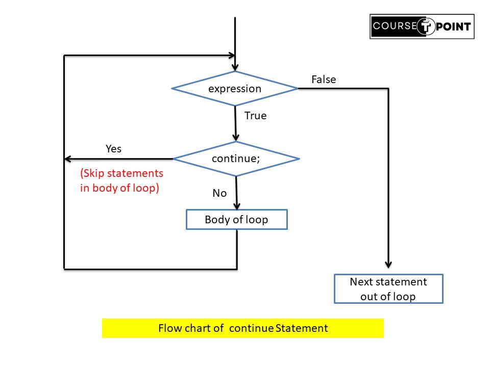

Control Statement in Java
| Table Of Content |
|---|
Control Statement in Java
In Java Programming Language uses control statements to cause the flow of execution to advance and branch based on changes to the state of a Program. Java's program control statements can be put into the following categories: Selection, Iteration and Jump.

Selection Statement
Java support Selection statement that allow you to control the flow of statement based upon condition during run time.
Simple If statement
The if statement is a powerful decision making statement used to control flow of Execution statements. If the expression is true, then statement1 is executed and if false statement1 will skipped and execute next statement.
Syntax:
if(expression){
statement1;
}
statement2;
class Statement{
public static void main(String [] args){
boolean condition =true;
// if statement
if(condition){
System.out.println("Condition is True.");
}
System.out.println("Condition is False.");
}
}
Output:
Condition is True.
Condition is False.
If-Else statement
If Condition is true, then the true-block statement immidiately executed otherwise; the false-block of statement is executed.
Syntax:
if(condition){
statement1;
statement2;
}
else{
statement3;
}
class Statement{
public static void main(String [] args){
boolean condition = false;
// if-else statement
if(condition){
System.out.println("Java is Not Interesting.");
}
else{
System.out.println("Java is Interesting and Easy.");
}
}
}
Output: Java is Interesting and Easy.
Nesting of If-else statement.
In simple nesting of if-else statement is define as one or more than one if-else statement part of if or else block.
Syntax:
if(condition1){
if(condition2){
statement1;
}
else{
statement2;
}
}
else{
if(condition3){
statement3;
}
else{
statement4;
}
}
/*Program to demonstrate greatest of three number using nesting if else.*/
class Statement{
public static void main(String [] args){
int a = 9;
int b = 16;
int c = 7;
if( a>b)
{
if(a>c)
System.out.println("a is Greatest Number.");
else
System.out.println("c is Greatest Number");
}
else{
if(b>c)
System.out.println("b is Greatest Number");
else
System.out.println("c is Greatest Number");
}
}
}
Output: b is Greatest Number
ElseIf Ladder
This is a type of nesting in which there is an if-else statement in every else part expect the last else part.
Syntax:
if(condition1){
statement1;
}
else if(condition2){
statement2;
}
else if(condition3){
statement3;
}
else{
default statement;
}
/*Program to find out the grate of student when the marks of 5 subjects are given.*/
import java.util.Scanner;
class Statement{
public static void main(String [] args){
float m1,m2,m3,m4,m5,per;
Scanner sc = new Scanner(System.in);
System.out.println("Enter Your marks : ");
m1 = sc.nextFloat();
m2 = sc.nextFloat();
m3= sc.nextFloat();
m4 = sc.nextFloat();
m5 = sc.nextFloat();
per = (m1+m2+m3+m4+m5)/5;
System.out.println("Your Percentage: " + per);
if (per <= 100 && per >= 90)
System.out.println("A+ Grade");
else if (per < 90 && per >= 80)
System.out.println("A Grade");
else if (per < 80 && per >= 70)
System.out.println("B Grade");
else if (per < 70 && per >= 60)
System.out.println("C Grade");
else if (per < 60 && per >= 50)
System.out.println("D Grade");
else if (per < 50 && per >= 40)
System.out.println("E grade");
else
System.out.println("You are fail! ");
}
}
Output:
Your Percentage: 73.2
B Grade
Switch statement
The Swtich statement tests the value of a given variable(or expression) against a list of case values and when a match is found, a block of statement associated with that case is executed otherwise default case block is executed (Optional). The syntax of switch statement is given below:
Syntax:
switch(expression){
case < value >:
block1;
break;
case < value >:
block2;
break;
default :
default-block;
break;
}
class Statement{
public static void main(String [] args){
int day = 2;
switch(day){
case 1 :
System.out.println("Monday");
break;
case 2 :
System.out.println("Tuesday");
break;
case 3 :
System.out.println("Wednesday");
break;
case 4 :
System.out.println("Thursday");
break;
case 5 :
System.out.println("Friday");
break;
case 6 :
System.out.println("Saturday");
break;
case 7 :
System.out.println("Sunday");
break;
default :
System.out.println("Invalid day!");
break;
}
}
}
Output:Tuesday
Loop Statement
Loop are used when we want to execute a block of statement or a part
of program at multiple times. suppose a program to print " hello
world " 20 times. one way to get the desired output using
System.out.println statements, which is bad programming skill or not
preferable, other way we can use loop to print the "hello world "
easily.
The Process of repeatedly executing a block of
statements is known as Looping. The Statement in the block may be
executed any number of times, from zero to infinite number.
While Loop
While loop is also called Entry control loop. In while loop first the expression is check , if it is true then the statements in the body of loop is executed. After the execution , codition is checked once again If it is true futher execute the body of loop and check again & again. otherwise, It is terminated immidiately to the body of loop.
Syntax:
initialization;
while(expression){
body of loop;
}

class Statement{
public static void main(String [] args){
int i = 0; // initialization
while(i < 5){ // (i < 5) expression
System.out.println("Hello Java!");
i++; //updation
}
}
}
Output:
Hello Java!
Hello Java!
Hello Java!
Hello Java!
Hello Java!
Do-While Loop
do-while loop is similar to while loop, but do-while first execute the body of loop than after execution it check the condition. It means if condition is false at least once body of loop is executed this reason do-while loop is also called exit control loop.
Syntax:
initialization;
do{
body of loop
}while(condition);
class Statement{
public static void main(String [] args){
int i=1;
do{
System.out.println("Learn java with courseTpoint!");
i++;
}while(i==0);
}
}
Output:Learn java with courseTpoint!
Difference Between While and Do-while Loop
| while loop | do-while loop |
|---|---|
| It is a looping construct that will execute only if the test condition is true. | It is looping construct that will execute at least once even if the test condition is false. |
| It is an entry-controlled loop. | It is an exit-controlled loop. |
| Checks the loop condition before entering the loop. | Checks the loop condition after entering the loop. |
| Use when you want to execute a loop only if condition is true from the start. | Use when want to ensure the loop body executes at least once before checking the condition. |
For Loop
The for loop is another entry-controlled loop that provides a more concise loop control structure. The general form of the for loop is
Syntax:
for(initialization; condition ; increment/decrement){
body of loop
}

class Statement{
public static void main(String [] args){
for(int i =0 ; i < 5 ; i++){
System.out.printf(i + "\t");
}
}
}
Output: 0 1 2 3 4
For Each Loop
For each loop is enhanced form of for loop. for-each style for automated preceding loop.
Syntax:
for(type var : collection){
statement-block
}
import java.io.*;
class Statement
{
public static void main(String[] args)
{
// array declaration
int arr[] = { 10,5,9,3,6 };
for (int value : arr)
System.out.print(value + " ");
}
}
Output: 10 5 9 3 6
Nesting of loops
When a loop is written inside another loop is known nesting of loop. Any type of loop can be nested inside any other type of loop. for example a for loop may be nested inside another for loop or inside a while or do-while loop.
Output:
for ( initialization; condition; update )
{
for ( initialization; condition; update )
{
// statement of inside loop
}
// statement of outer loop
}
class Statement
{
public static void main(String[] args)
{
for(int i=0; i < 5; i++){ //outer loop
for(int j=0; j < 5 ; j++){ //inner loop
System.out.printf(i + "," + j +"\t");
}
System.out.println("");
}
}
}
Output:
0,0 0,1 0,2 0,3 0,4
1,0 1,1 1,2 1,3 1,4
2,0 2,1 2,2 2,3 2,4
3,0 3,1 3,2 3,3 3,4
4,0 4,1 4,2 4,3 4,4
Jump Statement
Java Support three jump statement break, continue, and return. These statement transfer control to another part of program.
- Break : Break statement is encountered inside a loop, the loop is terminated and program control resumes at the next statement following the loop. Syntax:
break;
class Statement
{
public static void main(String[] args)
{
for(int i=0; i < 5; i++){
if(i==3){
break;
}
System.out.println(i);
}
}
}
Output: 0 1 2
continue;

class Statement
{
public static void main(String[] args)
{
for(int i=0; i < 5; i++){
if(i==3){
continue;
}
System.out.println(i);
}
}
}
Output: 0 1 2 4
return;
class Statement
{
public static int sum(int a, int b)
{
return (a+b) ;
}
public static void main(String[] args)
{
System.out.println("sum = " + sum(5,6));
}
}
Output: sum = 11